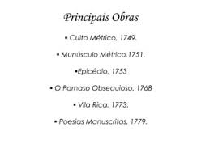

Blog sobre Cláudio Manuel da Costa
Página Inicial
Sobre Cláudio Manuel
Legado
Obras Arcádicas de Cláudio Manuel
Texto sobre as principais obras escritas por Cláudio Manuel no contexto do Arcadismo.
